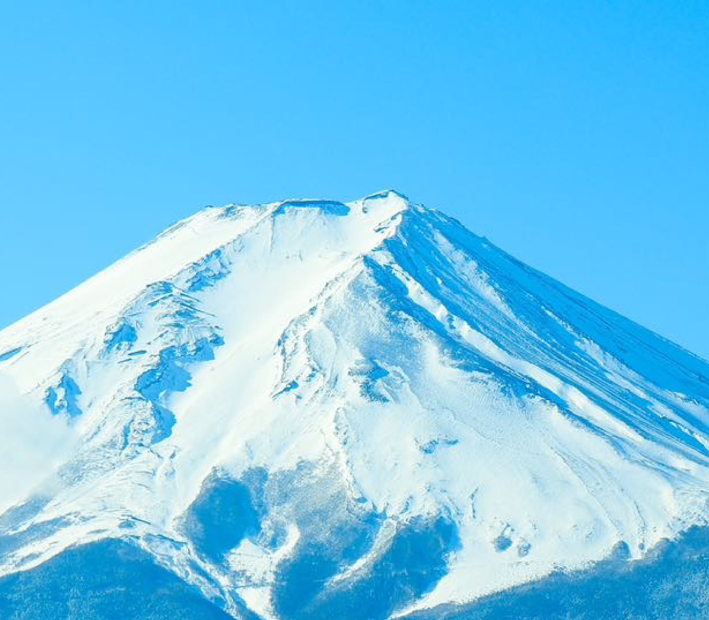
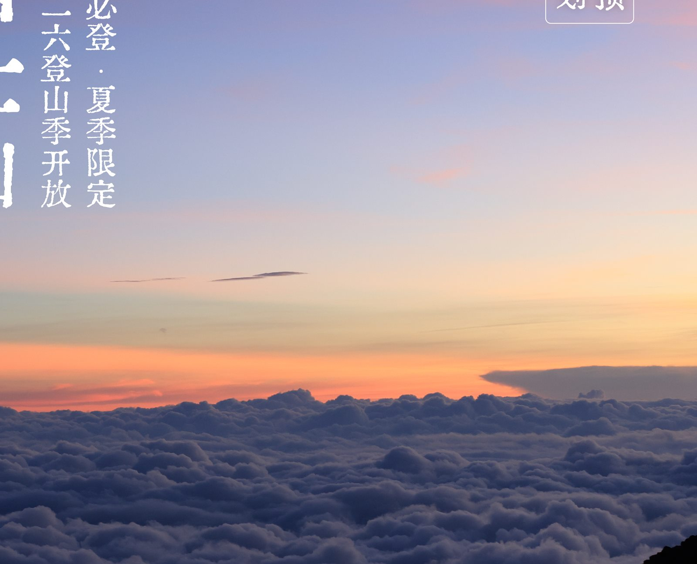
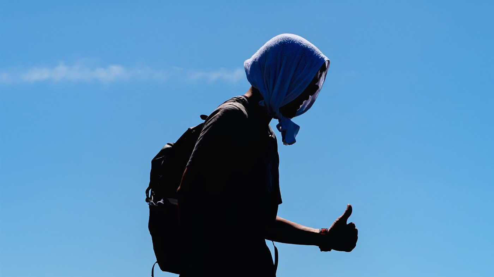
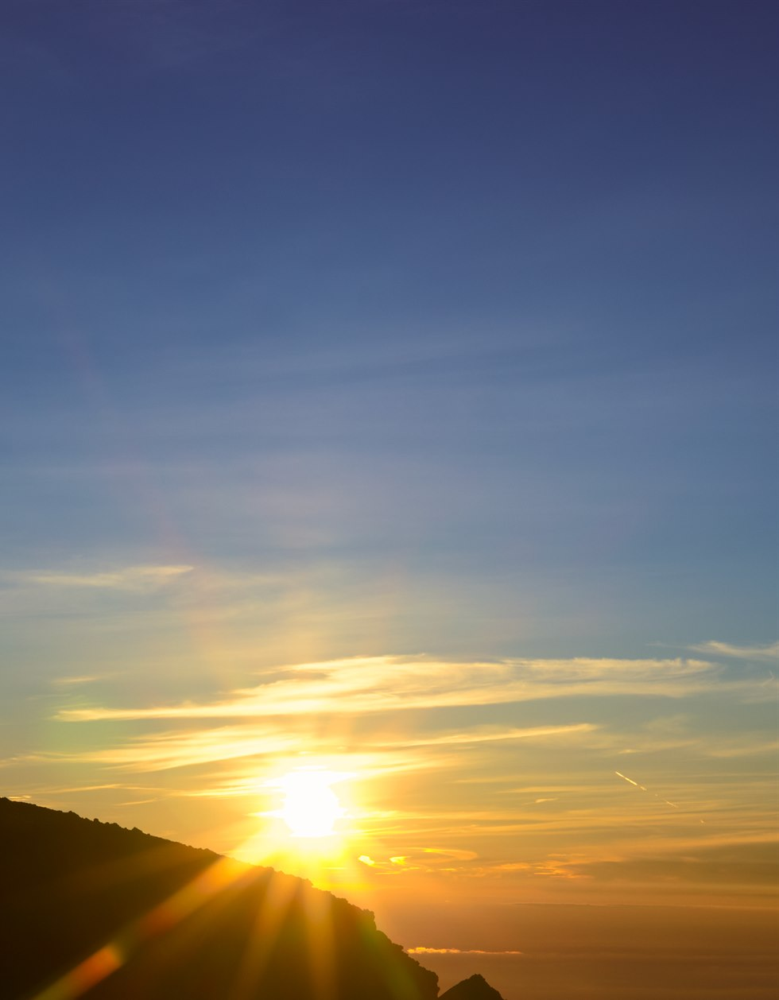
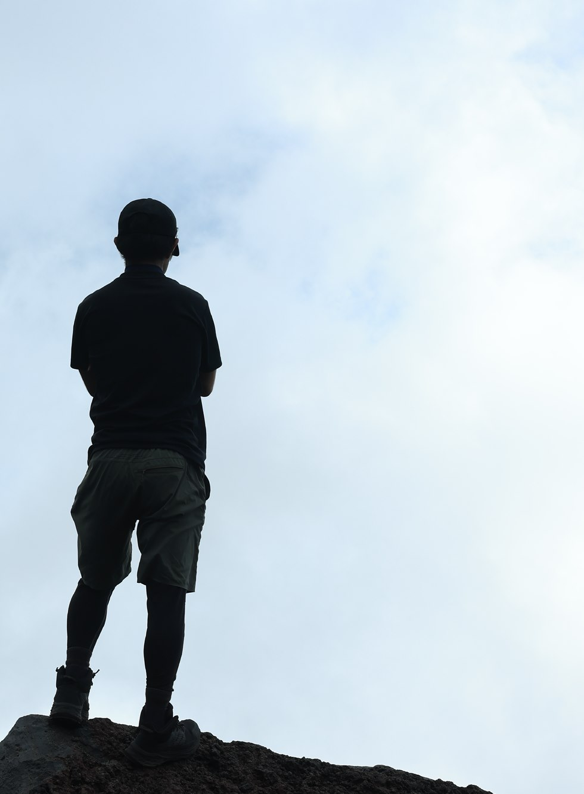

Professional Mountain Guide
Full CN/JA/EN bilingual communication, reducing uncertainty from language barriers and on-site decisions.

Fuji climbing isn't a casual bucket-list summit. It's EVERWILD's specially designed 2026 summer mountain experience for those who genuinely want to walk into Mount Fuji.
What EVERWILD has always done: making outdoor experiences more than arriving at a destination — taking the mountain seriously. Pace management, interpretation, physical preparation, and safety — all in one coherent experience.
People don't change through travel — they change through genuine experience. Climbing is one way. Mount Fuji doesn't need to be romanticized, but it does need to be taken seriously.
This isn't a 'just follow along' tour. We want you to know why you're here, how the mountain formed, why the weather shifts, and why the team needs a shared rhythm.
Full CN/JA/EN bilingual communication, reducing uncertainty from language barriers and on-site decisions.
From geology and weather to flora, fauna, and culture — turning 'just visiting' into truly walking inside Fuji.
Helping first-time serious hikers build a training direction, rather than pushing through unprepared on departure day.
A steady pace reduces the risk of premature exhaustion and summit failure.
Equipment, team discipline, exit conditions, and on-site response all explained in advance — enjoyment built on a foundation of seriousness.
Within the Mount Fuji open season from July 1 to September 10, 2026, small groups depart in batches. Final meeting times, mountain hut locations, transport, and hot spring arrangements are confirmed in the official tour notice.




We welcome first-time Fuji climbers, but the prerequisite is a genuine willingness to prepare. EVERWILD's outdoor experiences don't aim for 'easiest possible' — they aim for more genuine, more alive.
The following is a service scope overview at this page stage. Specific pricing, tour dates, mountain hut, and transport arrangements are confirmed with official registration and the final tour notice.
Official registration requires reading and confirming the Mount Fuji Activity Rules & Consent Form. Below is a page summary; legal effect is determined by the official Japanese version.
Participants must complete the mountaineering training designated by the organizer, and complete official Fuji mountain entry registration and timetable confirmation for the current year.
Follow guide instructions at all times during the climb; no overtaking the guide. If significantly behind target time, separated from the lead group, or at risk of altitude sickness, the guide may determine exit from the group.
Late arrival, post-exit assistance, and lost items may incur additional fees. Guide transport fees, hourly support fees, and shipping costs apply per the rules.
Strongly recommend purchasing travel/climbing insurance. The organizer and guide cannot provide altitude sickness medication, cold medicine, or other pharmaceuticals.
If the activity is cancelled due to weather or organizer reasons, a full refund will be issued. Please notify cancellations in writing (email or message).
Contract terms and cancellation policy for all EVERWILD tour products. Available in Chinese, English, and Japanese.
Please read before official registration and payment. If the page summary and official document differ, the official document and final tour notice take precedence.
Rolling departures within the Mount Fuji open season. We manage group sizes to prioritize experience, pace, and safety margins over maximizing headcount.
Submit your interest here, or send "Fuji" in a comment or DM. We'll follow up based on your dates, group size, experience, and contact details.
Submitting interest does not confirm a reservation. A reservation is officially placed only after full payment and confirmation of activity rules.
If you're unsure whether this is right for you, feel free to include your fitness level, experience, and any concerns in the notes field.